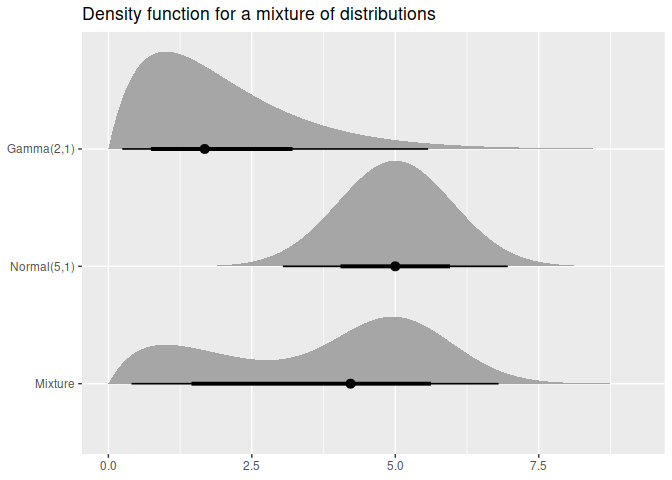

The distributional package allows distributions to be used in a data context.
Installation
The development version can be installed from GitHub with:
# install.packages("remotes")
remotes::install_github("mitchelloharawild/distributional")Brief background
The fabletools package produces distributional forecasts. Returning distributions for predictions isn’t particularly new (see predict.lm() for instance), however it is unique in how it represents the distributions. Unlike other packages which return the distribution’s parameters (expecting users to use the parameters appropriately), fabletools returns a classed distribution object.
This package aims to generalise the crude distribution objects developed for fabletools, into light-weight and general distribution classes for use in prediction outputs of models. There are several packages which implement distributions for R:
- stats provides functions to work with possibly multiple distributions (comparisons made below).
- distributions3 represents singular distributions using S3, with particularly nice documentation.
- distr represents singular distributions using S4.
- distr6 represents singular distributions using R6.
- Many more in the CRAN task view
This package differs from the above libraries by storing the distributions in a vectorised format. It does this using vctrs, so it should play nicely with the tidyverse (try putting distributions into a tibble!).
Additionally, this package aims to support modifiers on distributions such as transformations (such as log), zero-inflation, and truncation.
Example
Distributions are created using dist_*() functions. Currently only the normal distribution is supported for testing purposes.
library(distributional)
my_dist <- dist_normal(mu = 1:10, sigma = 1)
my_dist
#> <distribution[10]>
#> [1] N(1, 1) N(2, 1) N(3, 1) N(4, 1) N(5, 1) N(6, 1) N(7, 1) N(8, 1)
#> [9] N(9, 1) N(10, 1)The standard four distribution functions in R are usable via these generics:
density(my_dist, 0) # dnorm(0, mean = 1:10, sd = 1)
#> [1] 2.419707e-01 5.399097e-02 4.431848e-03 1.338302e-04 1.486720e-06
#> [6] 6.075883e-09 9.134720e-12 5.052271e-15 1.027977e-18 7.694599e-23
cdf(my_dist, 5) # pnorm(5, mean = 1:10, sd = 1)
#> [1] 9.999683e-01 9.986501e-01 9.772499e-01 8.413447e-01 5.000000e-01
#> [6] 1.586553e-01 2.275013e-02 1.349898e-03 3.167124e-05 2.866516e-07
quantile(my_dist, 0.1) # qnorm(0.1, mean = 1:10, sd = 1)
#> [1] -0.2815516 0.7184484 1.7184484 2.7184484 3.7184484 4.7184484
#> [7] 5.7184484 6.7184484 7.7184484 8.7184484
generate(my_dist, 10) # lapply(1:10, function(mu) rnorm(10, mean = mu, sd = 1))
#> [[1]]
#> [1] 2.26295428 0.67376664 2.32979926 2.27242932 1.41464143 -0.53995004
#> [7] 0.07143297 0.70527955 0.99423283 3.40465339
#>
#> [[2]]
#> [1] 2.7635935 1.2009908 0.8523430 1.7105384 1.7007849 1.5884892 2.2522234
#> [8] 1.1080789 2.4356833 0.7624616
#>
#> [[3]]
#> [1] 2.775732 3.377396 3.133336 3.804190 2.942893 3.503608 4.085769 2.309046
#> [9] 1.715401 3.046726
#>
#> [[4]]
#> [1] 3.764293 3.457112 3.566690 3.350528 4.726751 5.151912 4.992160 3.570487
#> [9] 5.238304 3.720654
#>
#> [[5]]
#> [1] 6.757903 5.560746 4.547216 4.167957 3.833429 3.934409 3.436218 6.156537
#> [9] 5.832047 4.772671
#>
#> [[6]]
#> [1] 6.266137 5.623297 8.441365 5.204661 5.945123 6.250141 6.618243 5.827376
#> [9] 3.776100 4.736386
#>
#> [[7]]
#> [1] 7.358729 6.988955 6.059351 6.884175 6.185031 7.242263 5.574902 7.365941
#> [9] 7.248413 7.065288
#>
#> [[8]]
#> [1] 8.019156 8.257338 7.350990 7.880831 8.664136 9.100969 8.143771 7.882246
#> [9] 7.087932 6.562414
#>
#> [[9]]
#> [1] 8.202910 10.254083 9.772142 8.780484 8.575190 8.581020 9.996987
#> [8] 8.724222 10.256019 9.646674
#>
#> [[10]]
#> [1] 11.299312 9.126738 10.008371 9.119128 10.596259 10.119718 9.717826
#> [8] 11.455988 10.229020 10.996544You can also compute intervals using hilo()
hilo(my_dist, 0.95)
#> <hilo[10]>
#> [1] [-0.95996398, 2.959964]95 [ 0.04003602, 3.959964]95
#> [3] [ 1.04003602, 4.959964]95 [ 2.04003602, 5.959964]95
#> [5] [ 3.04003602, 6.959964]95 [ 4.04003602, 7.959964]95
#> [7] [ 5.04003602, 8.959964]95 [ 6.04003602, 9.959964]95
#> [9] [ 7.04003602, 10.959964]95 [ 8.04003602, 11.959964]95Additionally, some distributions may support other methods such as mathematical operations and summary measures.
my_dist
#> <distribution[10]>
#> [1] N(1, 1) N(2, 1) N(3, 1) N(4, 1) N(5, 1) N(6, 1) N(7, 1) N(8, 1)
#> [9] N(9, 1) N(10, 1)
my_dist*3 + 2
#> <distribution[10]>
#> [1] N(5, 9) N(8, 9) N(11, 9) N(14, 9) N(17, 9) N(20, 9) N(23, 9) N(26, 9)
#> [9] N(29, 9) N(32, 9)
mean(my_dist)
#> [1] 1 2 3 4 5 6 7 8 9 10
variance(my_dist)
#> [1] 1 1 1 1 1 1 1 1 1 1You can also visualise the distribution(s) using autoplot().
